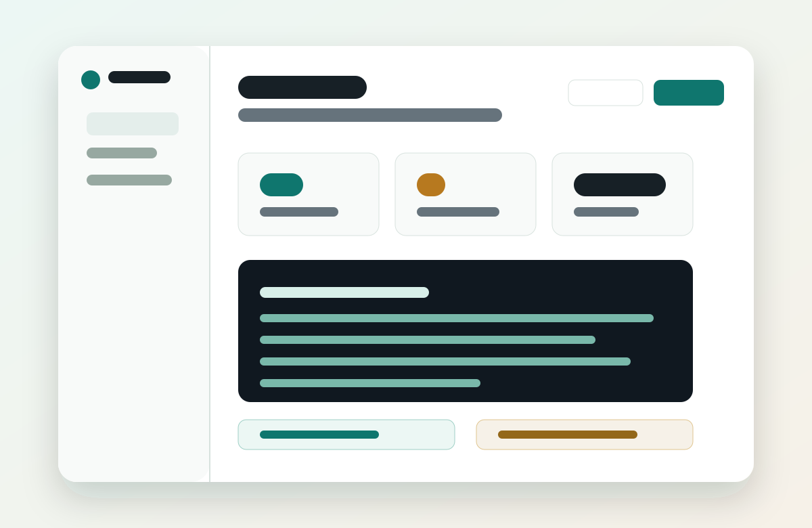

Exact envelopes
The daemon executes only a standalone Conduit envelope after trimming leading and trailing whitespace.
Conduit is a local runner for explicit, inspectable requests from chatbots, docs, and paired sessions. It gives clipboard workflows a consent boundary that is less cursed than pasting arbitrary shell into a terminal.

Clipboard execution uses exact-envelope parsing. Prose, READMEs, issue comments, webpages, and chat replies that merely contain a Conduit block are text, not consent.
The daemon executes only a standalone Conduit envelope after trimming leading and trailing whitespace.
Trusted execution requires a paired local session and a one-shot nonce bound to that session.
Reads, writes, patches, git inspection, and shell commands flow through local profiles and confirmations.
Conduit keeps the agent loop available for elevated authenticated sessions, while the default clipboard gesture stays narrow: copy the Conduit request, and only the Conduit request.
npm run conduit -- session create --label "ChatGPT" --root /path/to/project npm run conduit -- daemon start --interval-ms 1000 npm run app